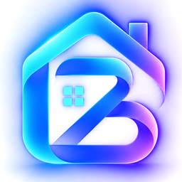
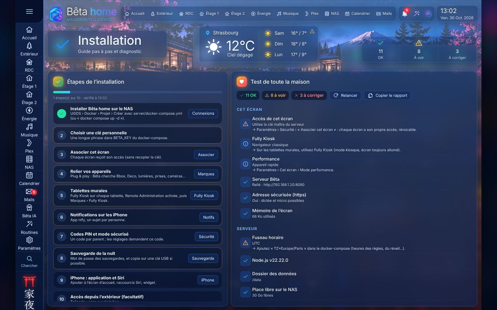
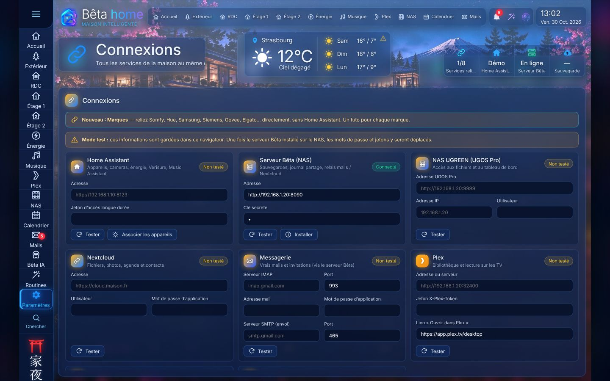
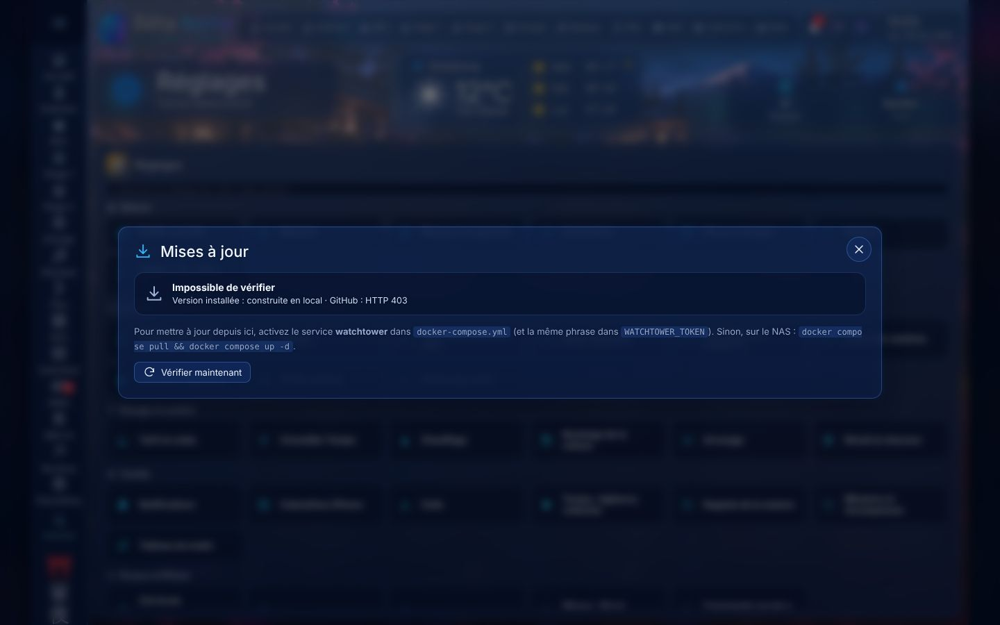
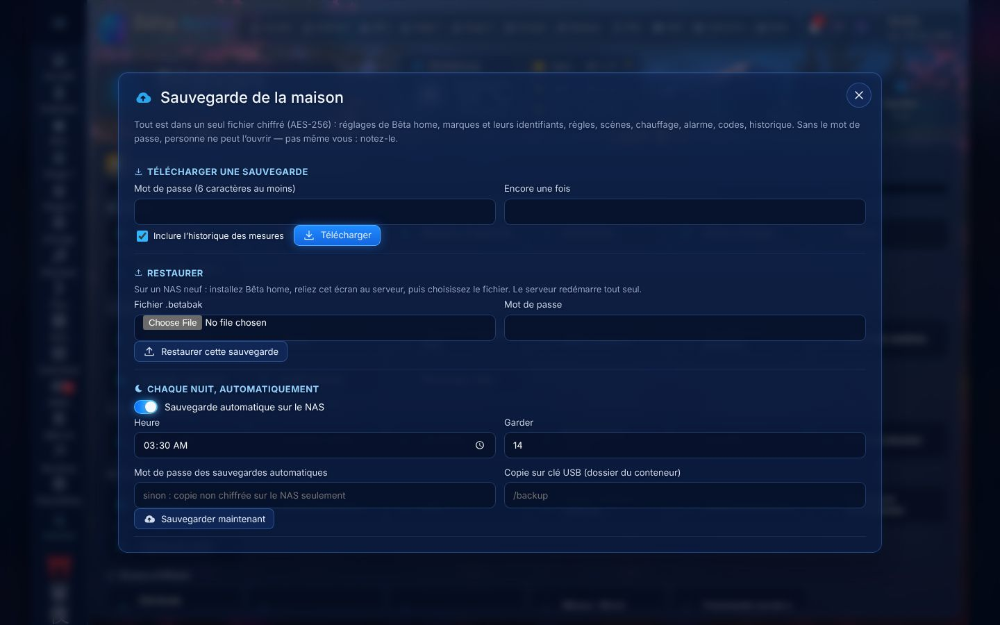
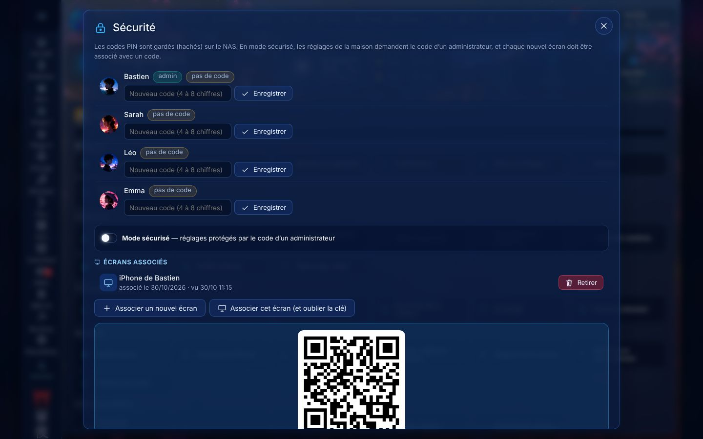
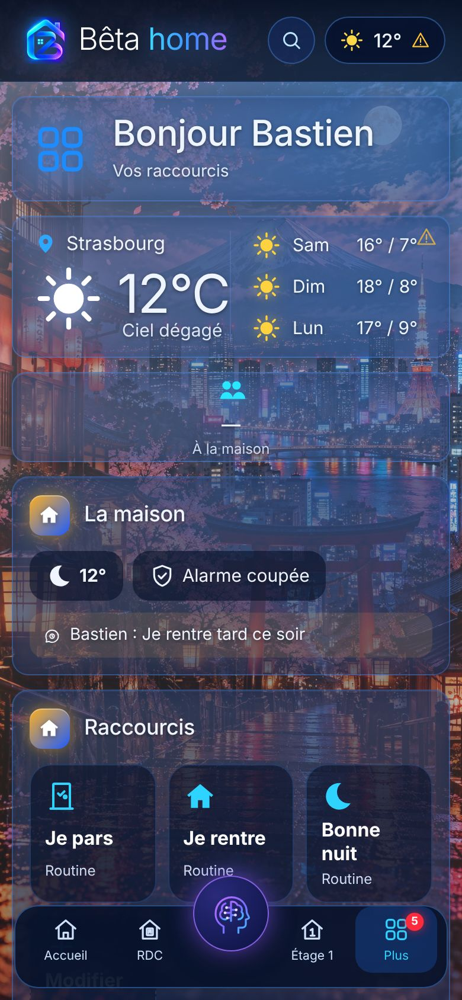
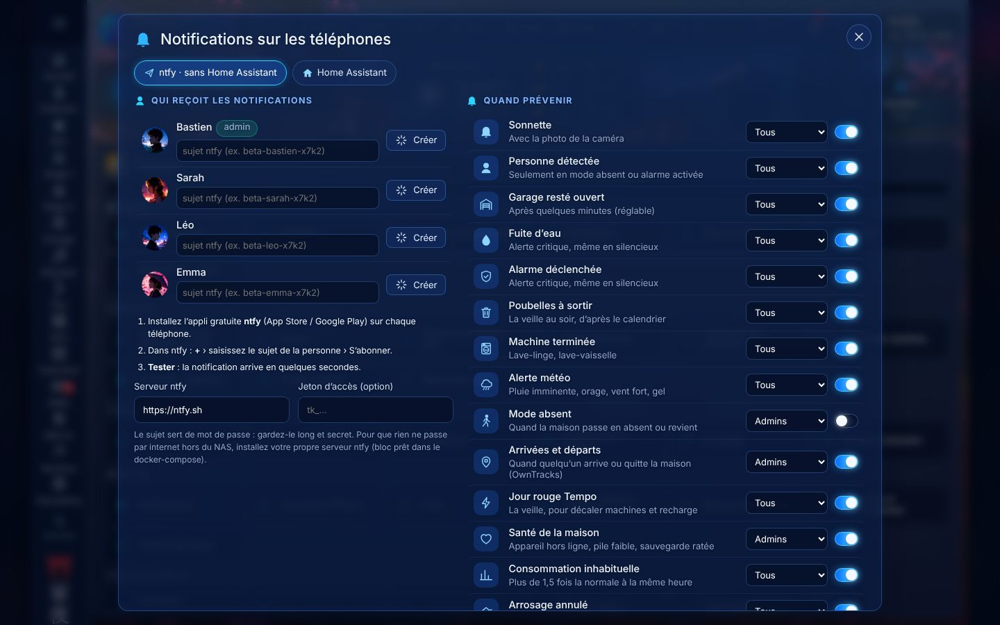

http://IP-du-NAS:8090Seul beta-home est indispensable. Tous les autres services sont commentés (désactivés) dans le fichier : vous les activez quand vous en avez besoin, un par un.
192.168.1.20. Idéalement, réservez-la dans l'application Deco (Plus › Avancé › Réservation d'adresse) pour qu'elle ne change jamais.tram-cigogne-bretzel-2026-violet.docker (s'il n'existe pas), puis le sous-dossier beta-home.docker/beta-home.docker/beta-home/ ├── index.html, css/, js/, assets/ ← l'application ├── bridge/ ← pont Alexa / app Maison (facultatif) └── server/ ├── docker-compose.yml ← le fichier à modifier ├── Dockerfile ├── mosquitto/mosquitto.conf ├── tailscale/serve.json └── data/ ← créé au premier démarrage : TOUTES vos données
Ouvrez server/docker-compose.yml avec l'éditeur de texte d'UGOS (ou sur l'ordinateur). Seules ces lignes du service beta-home sont à changer :
services:
beta-home:
image: ghcr.io/ukiyo2208/beta-home:latest
build:
context: ..
dockerfile: server/Dockerfile
container_name: beta-home
restart: unless-stopped
network_mode: host # indispensable (découverte des caméras, Bonjour, HomeKit)
environment:
- PORT=8090
- BETA_KEY=tram-cigogne-bretzel-2026-violet # VOTRE phrase secrète
- BACKUP_KEEP=30
- GO2RTC_URL=http://127.0.0.1:1984
- TZ=Europe/Paris # heures justes pour les règles, le réveil…
volumes:
- ./data:/data
| Réglage | Rôle |
|---|---|
BETA_KEY | Clé maîtresse du serveur. Elle protège tout l'accès. Gardez-la secrète : les écrans s'associent ensuite par QR code sans la recopier. |
TZ | Fuseau horaire. Sans lui, le NAS est en UTC et les règles se déclenchent 1 à 2 h trop tôt. |
BACKUP_KEEP | Nombre de sauvegardes de la nuit conservées. |
BETA_OFF (facultatif) | Couper des modules serveur, par exemple BETA_OFF=famille,extra. Le reste fonctionne normalement. |
PHOTO_DIR (facultatif) | Dossier des photos pour le cadre photo des tablettes (avec le volume /photos, voir étape 8). |
image: télécharge l'image construite par GitHub. Si le téléchargement est refusé (image pas encore publiée ou privée), supprimez la ligne image: : Docker construit alors Bêta home sur le NAS à partir des fichiers copiés (1 à 2 minutes, rien à installer).beta-home.docker/beta-home/server (celui qui contient docker-compose.yml). UGOS propose alors d'utiliser le fichier existant.Activez SSH dans UGOS (Panneau de configuration › Terminal), puis depuis l'ordinateur :
ssh votre-compte@192.168.1.20 cd /volume1/docker/beta-home/server # adaptez « volume1 » si vos données sont sur un autre volume sudo docker compose up -d # télécharge (ou construit) et démarre sudo docker compose ps # état des services sudo docker logs -f beta-home # journal en direct (Ctrl+C pour quitter)
Dans le journal, vous devez voir une ligne du type Serveur Bêta 7.17 sur http://0.0.0.0:8090 — ….
http://192.168.1.20:8090 (l'IP de votre NAS).http://192.168.1.20:8090 et la clé BETA_KEY. Le voyant passe au vert.
Dans docker-compose.yml, chaque service facultatif est précédé de #. Pour l'activer, retirez le # et un espace au début de chacune de ses lignes (l'indentation doit rester alignée), puis redéployez le projet (UGOS : Projet › beta-home › Recréer ; SSH : sudo docker compose up -d).
| Service | Quand l'activer | Ensuite dans Bêta home |
|---|---|---|
| go2rtc (actif) | Caméras en direct, et caméras dans l'app Maison | Marques › caméras (Reolink, Tapo, ONVIF…) |
| mosquitto (actif) | Zigbee2MQTT, Tasmota, ESPHome | Marques › MQTT (IP du NAS, port 1883) |
| zigbee2mqtt | Clé Zigbee USB branchée sur le NAS | Marques › Zigbee2MQTT ; interface :8080 |
| matter-server | Appareils Matter (Aqara, Eve, Nanoleaf, IKEA) | Marques › Matter (IP:5580) — IPv6 du NAS activée |
| music-assistant | Musique sur les enceintes, sans Home Assistant | Marques › Music Assistant (IP:8095) |
| ntfy | Notifications hébergées chez vous plutôt que ntfy.sh | Réglages › Famille › Notifications : http://IP:8091 |
| matter-bridge | Piloter vos appareils avec Alexa ou l'app Maison / Siri | Connexions › Alexa et Maison (codes d'appairage affichés) |
| tailscale | Accès hors de la maison, en https | Étape 6 |
| watchtower | Mises à jour depuis Bêta home | Étape 7 |
BETA_KEY= : mettez exactement la même phrase que pour beta-home.ls /dev/serial/by-id/, puis adaptez la ligne devices:.Tailscale (gratuit) relie vos iPhone au NAS par un tunnel chiffré : aucun port à ouvrir sur la Bbox, et une adresse https (nécessaire au micro et à certaines applications).
tskey-auth-….TS_AUTHKEY=. Redéployez.https://beta-home.<votre-tailnet>.ts.net. Mettez cette adresse dans Connexions sur les iPhone, et dans OwnTracks.…/api/owntracks, identifiant et mot de passe personnels).WATCHTOWER_TOKEN= et mettez cette phrase.WATCHTOWER_HTTP_API_TOKEN=. Redéployez.
cd /volume1/docker/beta-home/server sudo docker compose pull # nouvelle image (ou : copiez les nouveaux fichiers puis « docker compose build ») sudo docker compose up -d # redémarre seulement ce qui a changé ; server/data est conservé
server/data et votre docker-compose.yml personnalisé.Branchez une clé USB sur le NAS, repérez son chemin dans Fichiers, puis décommentez la ligne de volume /backup du service beta-home :
volumes:
- ./data:/data
- /mnt/@usb/sdb1/beta-backup:/backup # adaptez le chemin de votre clé
Puis dans Réglages › Système › Sauvegarde : mot de passe de sauvegarde (notez-le !), sauvegarde de la nuit, copie vers /backup.

- /volume1/Photos:/photos:ro # lecture seule
Puis Réglages › Écrans et iPhone › Cadre photo : dossier /photos (ou l'adresse de votre serveur Immich).
fully-kiosk.com et installez-le.http://192.168.1.20:8090.


server/mosquitto/mosquitto.conf.server/data, lisibles par lui seul.| Problème | Cause probable et solution |
|---|---|
denied ou not found au téléchargement de ghcr.io/…/beta-home | Image non publiée ou privée : supprimez la ligne image: pour construire sur le NAS (étape 2). |
La page :8090 ne s'ouvre pas | Conteneur arrêté : Docker › Conteneur › beta-home › Journal. Port déjà pris : changez PORT=8090 (ex. 8095) et utilisez la nouvelle adresse. |
| « clé refusée » / 401 | La clé saisie diffère de BETA_KEY (attention aux espaces). Trop d'essais : attendez 10 minutes. |
| Les règles se déclenchent à la mauvaise heure | TZ=Europe/Paris manquant ; redéployez. |
| Caméras noires | go2rtc arrêté ou ancien montage : le volume doit être ./data/go2rtc:/config (un dossier). Si un dossier data/go2rtc.yaml vide existe d'une ancienne installation, supprimez-le. |
| Appareils Matter introuvables | IPv6 désactivée sur le NAS ou le réseau Deco ; activez-la. |
| Découverte des appareils vide | network_mode: host retiré ? Il est indispensable. |
| « permission denied » sur /data | Le dossier server/data doit être modifiable par Docker (Fichiers › Propriétés › Autorisations). |
| Pas de notification hors de la maison avec ntfy auto-hébergé | Les iPhone doivent joindre le NAS : Tailscale, et NTFY_BASE_URL à l'adresse Tailscale. |
# commandes utiles (SSH, dans docker/beta-home/server) sudo docker compose ps # qui tourne ? sudo docker compose logs --tail 100 beta-home sudo docker compose restart beta-home sudo docker compose down && sudo docker compose up -d # tout relancer (données conservées)